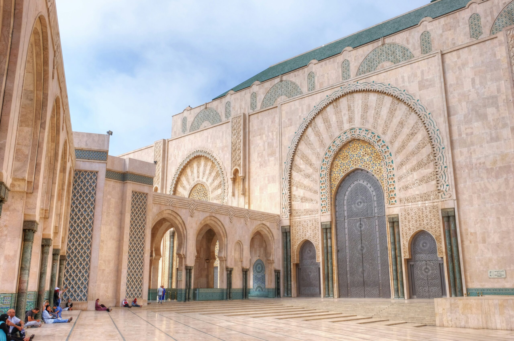
8-Day TourCasablanca
Imperial cities of Morocco
Explore Casablanca, Rabat, Fes, Meknes, and Marrakech with private travel support.
Starting from$1120
From Sahara desert adventures to imperial city journeys, discover handcrafted tours across Morocco.
Start Planning
8-Day TourCasablanca
Explore Casablanca, Rabat, Fes, Meknes, and Marrakech with private travel support.
 Full Day Trip
Full Day TripMarrakech
Escape Marrakech for one of Morocco’s most beautiful waterfall landscapes.
 11-Day Tour
11-Day TourMarrakech
A fuller journey through cities, mountains, desert, valleys, and the Atlantic coast.
Marrakech
The essential Marrakech to Sahara desert journey with dunes, valleys, and kasbahs.
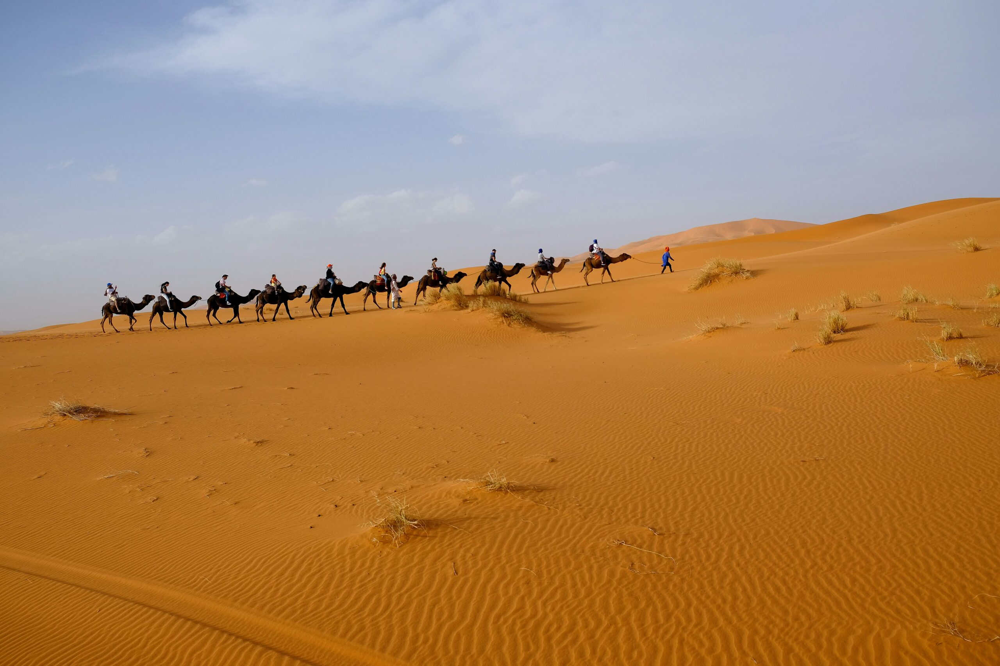
4-Day TourMarrakech
A comfortable desert adventure with deeper stops between Marrakech and Merzouga.
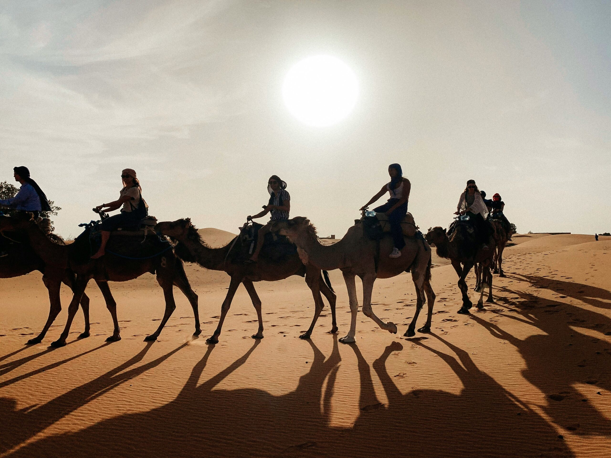
7-Day TourMarrakech
Discover Morocco’s cities, Atlas Mountains, kasbahs, and Sahara desert in one week.
 5-Day Tour
5-Day TourFes
Travel from Fes to Marrakech through mountains, desert, valleys, and old kasbahs.
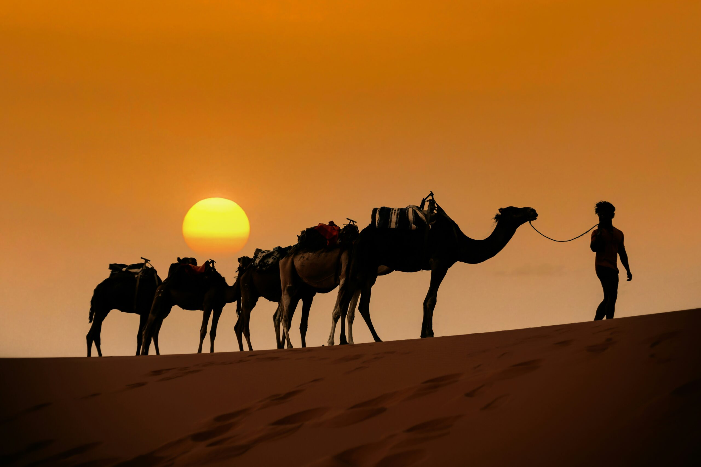
6-Day TourCasablanca
Pair Morocco’s heritage cities with desert scenery and private guided travel.
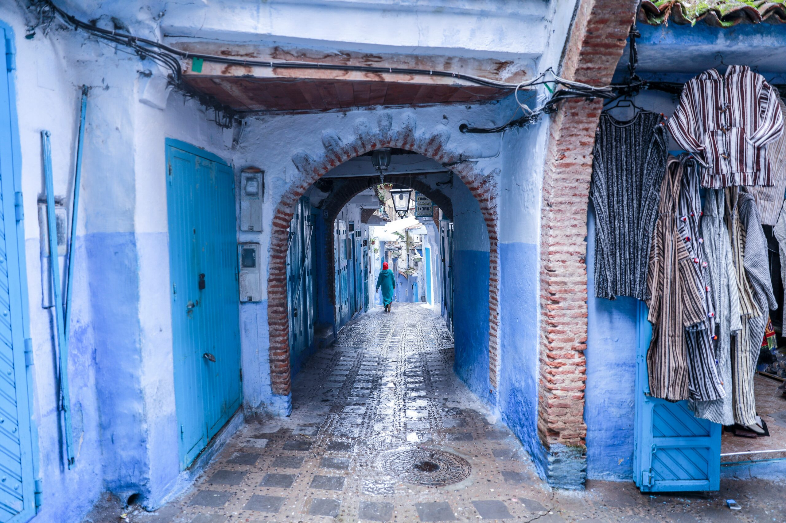
10-Day TourCasablanca
A deeper ten-day route for travelers who want culture, scenery, and the Sahara.
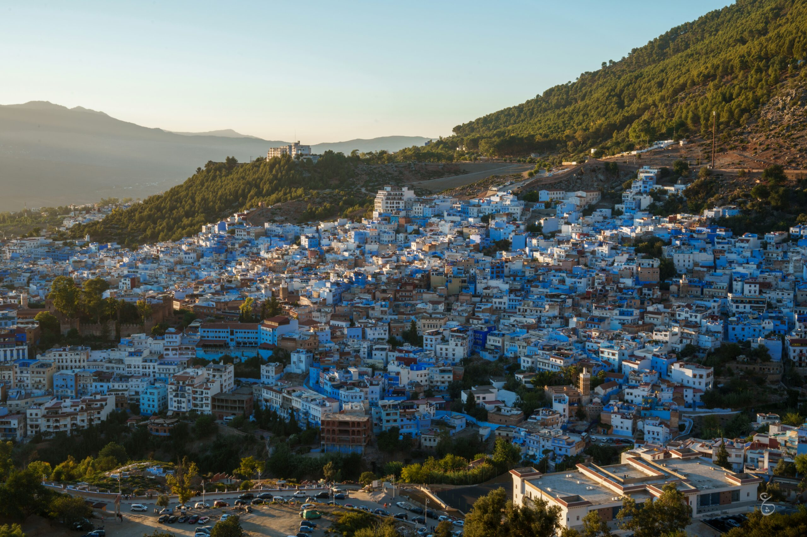
15-Day TourCasablanca
A relaxed grand route for seeing Morocco’s most memorable regions in depth.
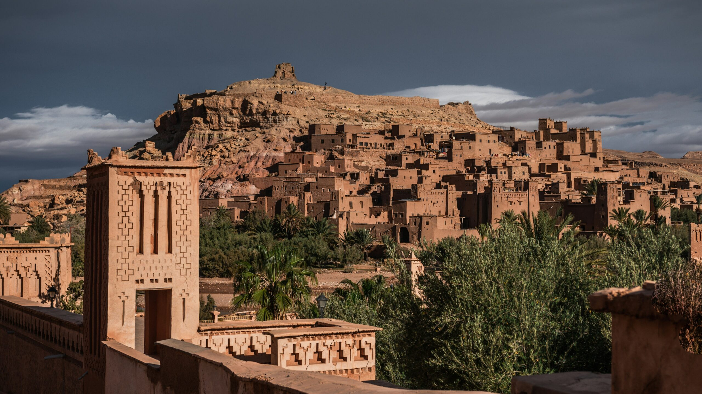
Full Day TripMarrakech
Visit two iconic kasbah sites and cross cinematic High Atlas scenery.
 4-Day Tour
4-Day TourMarrakech
Reach Merzouga by scenic roads and enjoy a private Sahara desert experience.
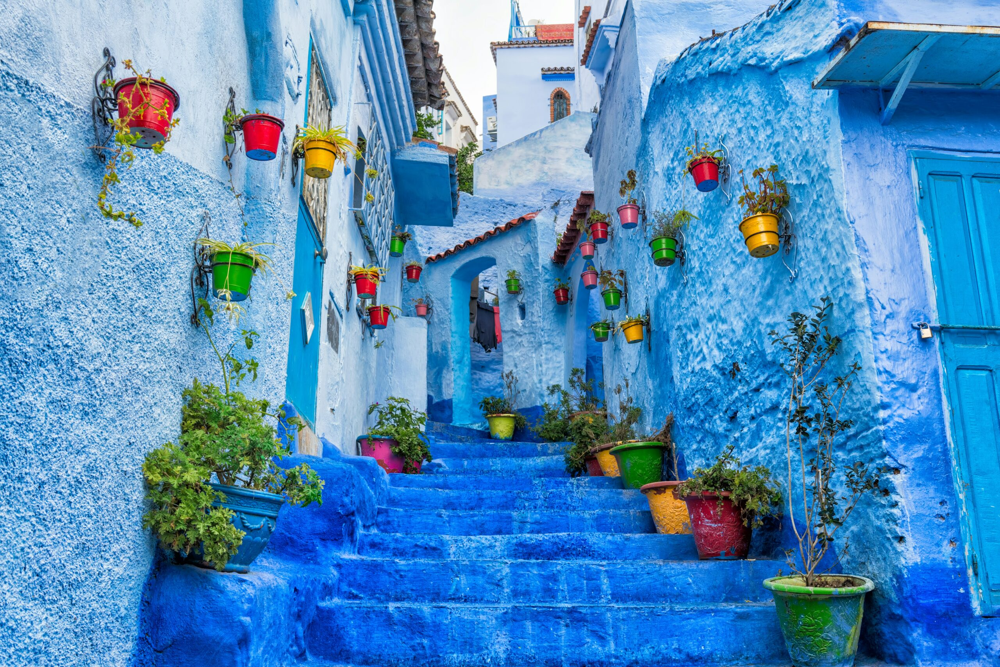
4-Day TourCasablanca
Explore northern Morocco’s blue streets, imperial roots, and city culture.
 4-Day Tour
4-Day TourFes
Journey through the heart of Morocco from Fes to Marrakech via the desert.
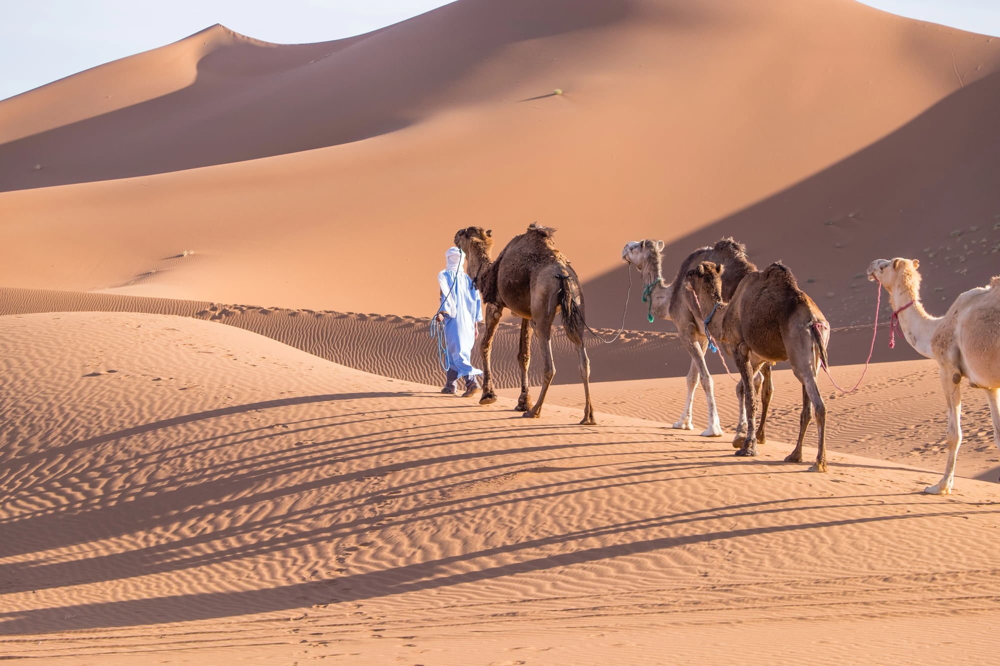
4-Day TourMarrakech
Travel into wilder desert scenery and experience Erg Chigaga’s open dunes.
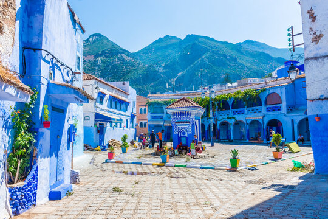
7-Day TourCasablanca
A polished seven-day introduction to Morocco from Casablanca to Marrakech.
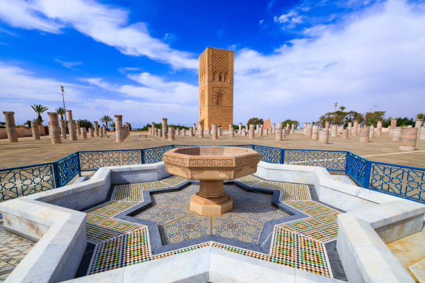
7-Day Luxury TourRabat
A premium private route through Morocco’s refined city and cultural highlights.
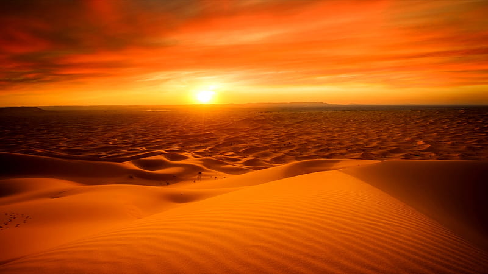
16-Day TourCasablanca
A meaningful heritage journey through Morocco’s cities, history, and cultural layers.
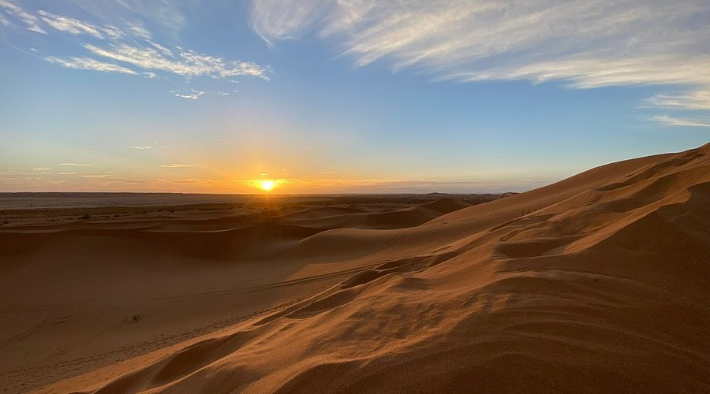
13-Day TourCasablanca
Balance imperial culture with desert camp nights, kasbahs, and scenic regions.
 7-Day Tour
7-Day TourAgadir
Start in Agadir and connect desert landscapes with Morocco’s historic cities.
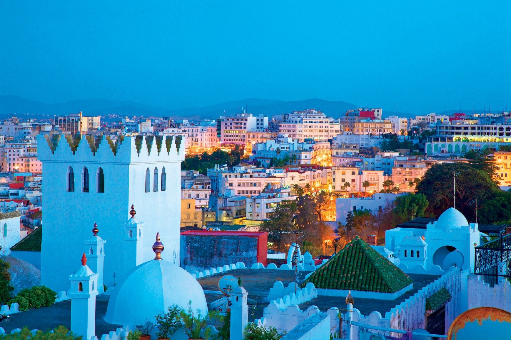
6-Day TourTangier
Travel from northern Morocco to the Sahara and finish in vibrant Marrakech.
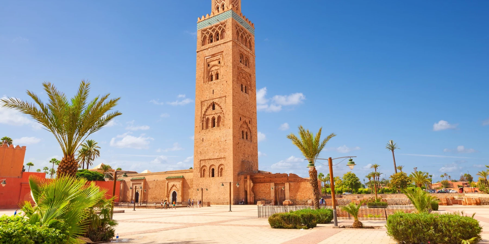
8-Day TourTangier
Start in Tangier and trace Morocco’s northern, imperial, and cultural highlights.
Tell Morocco BouTravel your route idea, dates, and travel style, and the team will shape a private journey.